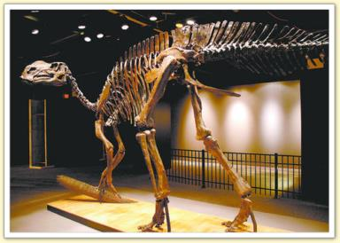

On connaît les dinosaures grâce aux nombreux fossiles qu'ils ont laissés et qu'on découvre tous les jours dans le monde entier.
Dans le cas des dinosaures, ce sont surtout des débris (des os) qui nous permettent de les connaître. Cependant, d'autres fossiles sont très intéressants comme : des empreintes de leur peau, des dents, des griffes, des empreintes de pas ou des oeufs et des nids
(quelquefois, les oeufs contiennent encore le squelette d'un bébé).
Certains squelettes sont reconstitués entièrement avec des fossiles, d'autres sont complétés avec des moulages en plâtre ou en résine.Le travail de reconstitution est difficile car les os sont devenus très fragiles.
